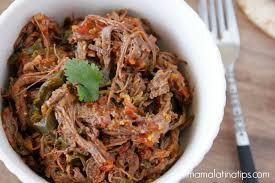
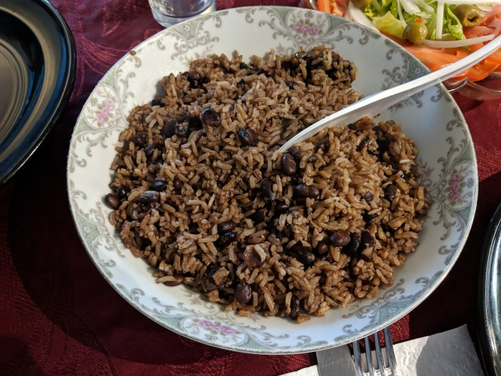
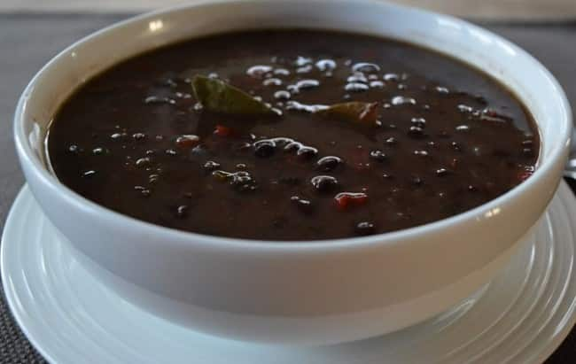

La Comida
- La Comida de Cuba no se queda atras tienen unos de los platos mas ricos que vas a probar.
- Ropa Vieja 
- Arroz Congri y Frijoles Negreos
La comida es una de las unicas cosas que los seres humanos realmente amamos y gracias a esto este tema no se puede quedar atras
Entres estos platos y Postes estan los suguientes:
 
La comida latina es un saboir que llena hasta los pelos, las personas espesialisadas en este estilo de comida son solos los que tiene y llevan tiempo estudiando como perfeccionarla.
El Hipopotamo
Este restauranrte "El Hipopotamo"con una puentruacion de casi cinco estrellas te llenara la hambre de solo un bocado segun los cientos de comentarios que recibio por las personas atendidas